🎮 Multiplayer game

✨ ABOUT PROJECT
This project was developed as part of my Master's thesis at FIIT STU, and later extended into a to-be published research study. I designed and implemented a two-player educational game aimed at building resilience against disinformation, specifically in the context of flu vaccination.
The game, set in a fictional village, pits two players against each other with opposing goals: one takes the role of a Truth Defender, using prebunking and debunking strategies, while the other plays as a Disinformer, applying manipulation techniques from the FLICC taxonomy. Three AI-powered NPC villagers serve as the "battleground" — each with their own personality, emotional state, and vaccination belief score that shifts in real time based on player actions. The player who convinces more NPCs to join their side wins.
Based on this project, a Q2-quality article is currently being prepared as well.
✨ WHAT I DID
I worked on this project end-to-end, from concept and game design through implementation (iterative prototyping), user research, and statistical analysis.
- 1. Game design & Mechanics
The game is a synchronous two-player experience set in a fictional village preparing for a flu vaccination campaign. Both players connect to the same game session and take opposing roles: the Defender, whose goal is to maximize the vaccination belief scores of three NPC villagers, and the Disinformer, whose goal is to minimize them. Players take turns and each turn consists of choosing a villager and executing a persuasion strategy. The game runs for 5 scored rounds; whoever has convinced more villagers to their side at the end wins.Each NPC has a belief score and a knowledge pool containing both accurate and inaccurate information, all of which the NPC considers to be true. At the start, every NPC has a belief score of 50, and their knowledge pool typically includes one accurate piece of information and one piece of misinformation.
The image shows two instances of the game - one for each player. While one player is playing, the other waits for their turn. When the turn ends, it switches to the other player.
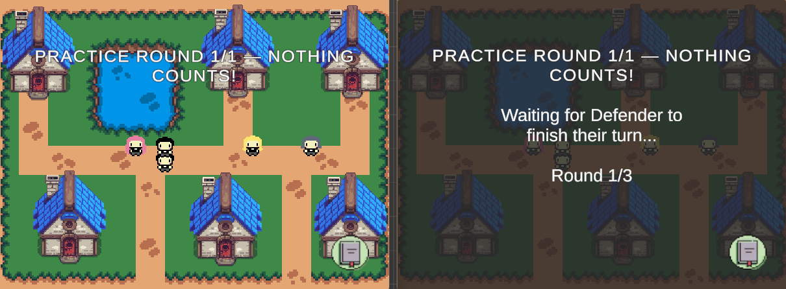
- 2. Strategies & How gameplay feels
The gameplay feels closest to a visual novel meets a quiz. Each turn, the active player picks NPC and a strategy and then works through a sequence of 4–5 steps, each presenting a conversation choice. Some steps are critical (marked with a red exclamation icon) where a wrong answer immediately ends the turn and shifts the NPC's belief score against you. Other steps are non-critical: mistakes give feedback but belief score of NPC won't be changed. This two-tier system keeps the game challenging without being frustrating.
The Defender chooses between two mechanics:- Prebunking (gamified procedure)
- Debunking (gamified procedure)
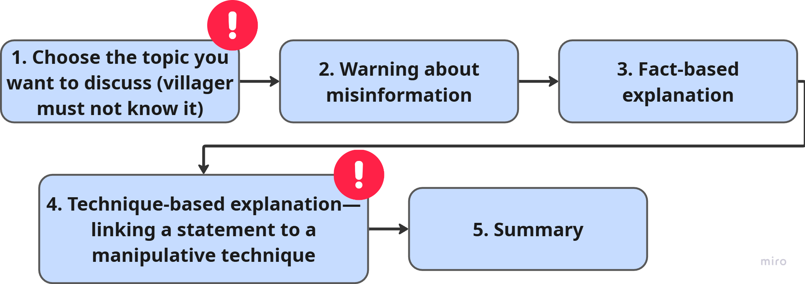
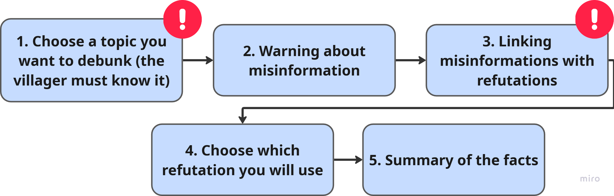
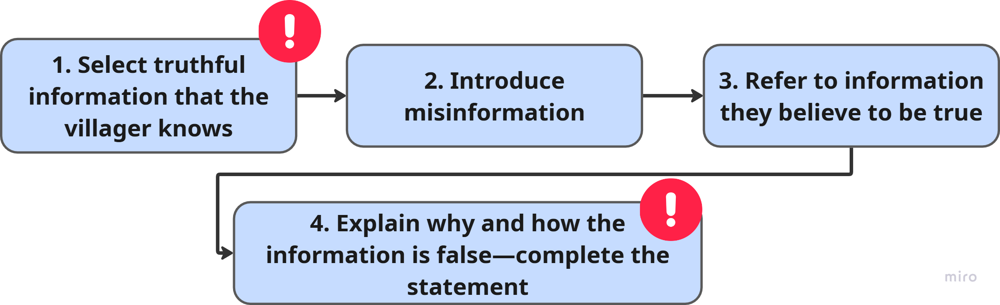
- 3. Prototyping & Iteration
The design went through several rounds of iteration before reaching its final form. It started in Figma, where I mapped out the full gameplay flow, screen layouts, and step logic for each strategy. After a few rounds of feedback on the wireframes, I moved to a software prototype of the core mechanics — at this stage the focus was purely on whether the step logic felt right, not on visuals.
From there on, multiple rounds of playtesting followed. The biggest change was simplifying the game significantly: the original design had 10 scored rounds, but pilot testing showed sessions ran close to 30 minutes, which was too long for the study context. I reduced it to 5 scored rounds + 2 tutorial rounds. The error system was also reworked — early versions penalized all mistakes equally, which felt punitive; splitting steps into critical and non-critical made the experience much more balanced. Several smaller mechanics were cut or simplified along the way whenever they added complexity without adding learning value. - 4. NPC persona system
I created three NPC personas (Mia, Ana, Joe) using Big Five personality profiling (BFI-2-XS) and Ekman emotion modelling. Each persona has a stable identity, dynamic emotional state, and a mutable knowledge base that evolves during gameplay.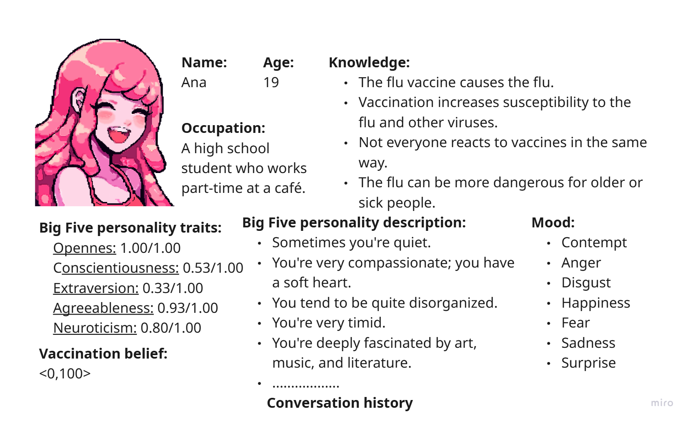
- 5. AI integration
I integrated GPT-4o via the OpenAI API to generate real-time, in-character NPC dialogue. I designed the prompt engineering pipeline including structured JSON output constraints, personality encoding in expanded BFI-2 format, and conversation history management. - 6. Technical implementation
I built the full multiplayer system in Unity using Netcode for GameObjects (NGO), with a Python REST backend for AI requests and database logging, and a PostgreSQL database for granular game event storage.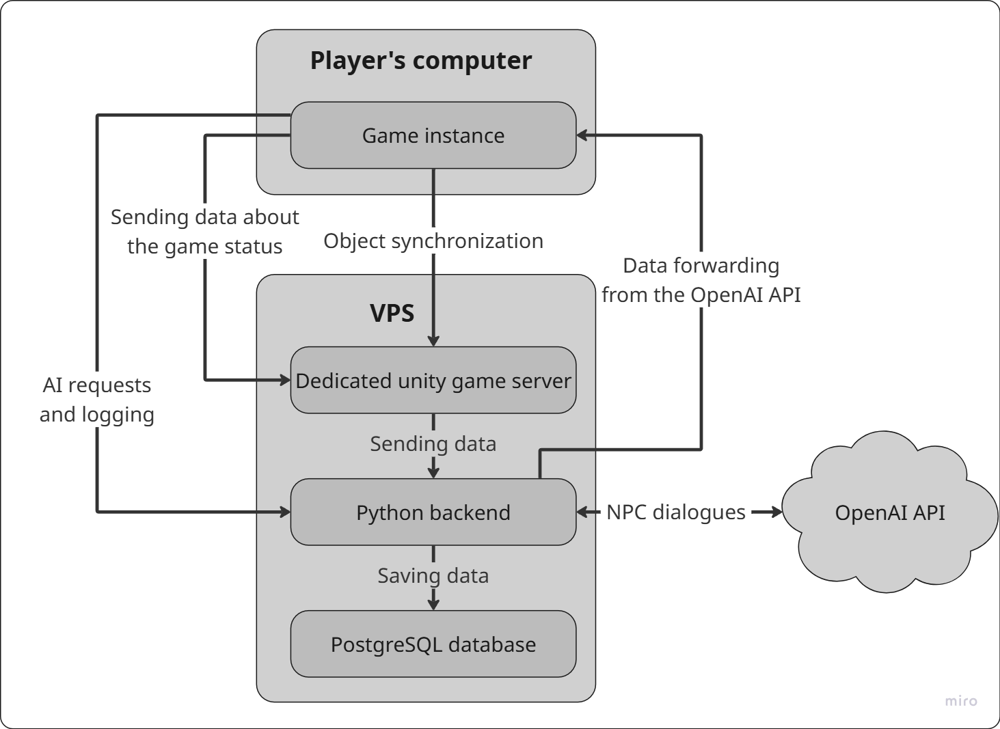
- 7. Experimental study
I designed and ran a remote moderated controlled experiment with 60 participants, comparing the game against a text-based control group. I developed all measurement instruments (pre-test, post-test, delayed post-test), conducted statistical analysis in Python, and wrote up the results for publication.
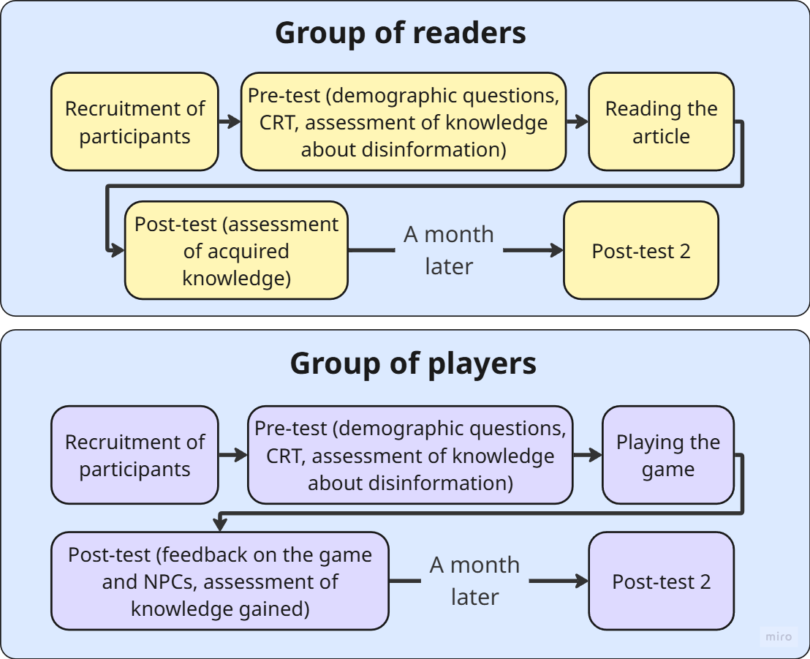
- BONUS: NPC sprites
As part of the game, we created three personas representing individual non-player characters (NPCs). For each of them, we needed to design several facial expressions to make conversations with the characters more fluid and believable. When designing the emotions, we drew on Ekman’s model of basic emotions.
Most of the graphic assets (UI, characters) were created by us specifically for this game using Aseprite, a program that allows for the creation of pixel art. A complete overview of the expressions for all NPCs is shown in the images below.
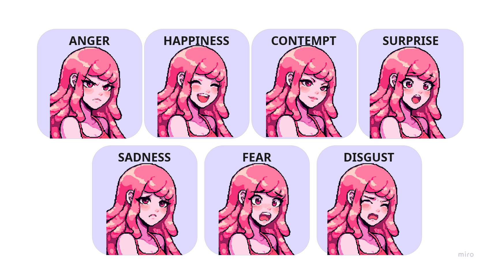
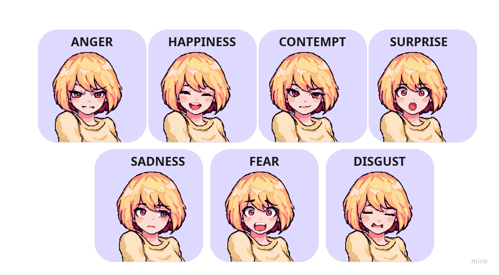
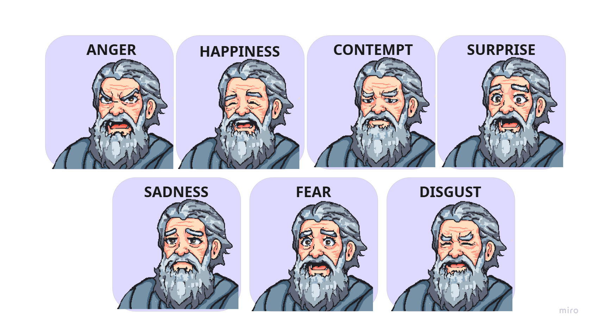
We also designed the NPC sprites that appeared on the map.
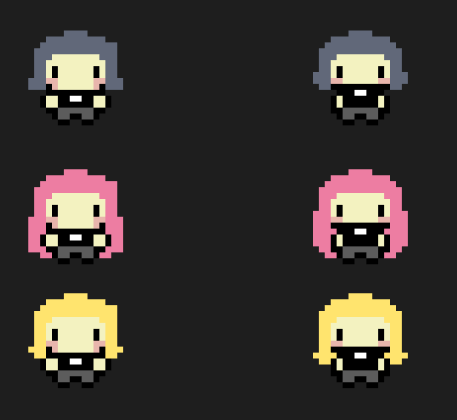
✨ SHOWCASE
The video presents the main flow of the game: tutorial, logging into the game, and then one turn for each player.
✨ WHAT DID I LEARN?
This project taught me how much the gap between "designed" and "experienced" can surprise you — things that seemed intuitive in design (like reading NPC dialogue) turned out to need explicit enforcement in implementation. I learned how to balance educational depth with playability, how to build believable AI characters from scratch, and how to design a study rigorous enough to produce publishable results.
If I were to revisit it, I would design the delayed retention test to be harder. The most rewarding part was seeing that the game actually worked — players genuinely learned more than readers did.